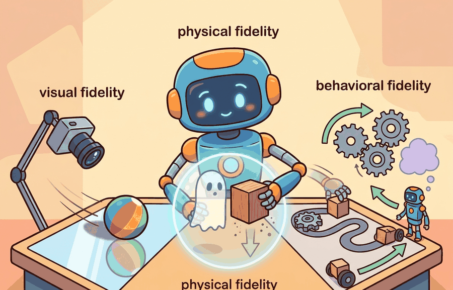

"Realism is not a volume knob. It is a mixing board with labels you should read before touching anything."
A Calibration-Minded AI Agent

Fidelity means agreement between simulation and the world along a specific axis. Physical fidelity, visual fidelity, behavioral fidelity, sensor fidelity, and task fidelity answer different questions.
For Fidelity: physical, visual, behavioral, connect the agent-environment boundary, dynamics assumptions, and transfer checks through the simulator artifact actually used in the experiment.
Fidelity Is Axis-Specific
Physical fidelity concerns dynamics: mass, inertia, friction, contacts, compliance, and actuation. Visual fidelity concerns rendered images, lighting, materials, camera models, and occlusions. Behavioral fidelity concerns whether the environment responds in ways that matter for the task: doors open, objects move, receptacles contain, fluids pour, and failure states persist.
A visually simple MuJoCo model can be enough for torque-control research. A perception policy may need Omniverse Replicator or BlenderProc imagery with camera artifacts. A household agent may need Habitat, AI2-THOR, ProcTHOR, BEHAVIOR, or OmniGibson-style object semantics because the claim depends on scene interaction, not just contact physics.
High visual fidelity cannot rescue wrong contact physics, and accurate contact physics cannot rescue a sensor model that gives the policy information the real robot never observes.
| Axis | What It Models | Where It Matters |
|---|---|---|
| Physical | Mass, contacts, friction, actuation, delay | Manipulation, locomotion, grasp stability, pushing |
| Visual | Lighting, textures, camera intrinsics, occlusion | Vision policies, detection, segmentation, pose estimation |
| Sensor | Noise, dropout, blur, calibration, frame timing | State estimation, navigation, visual servoing |
| Behavioral | Object affordances, state changes, task semantics | Household tasks, long-horizon planning, language grounding |
Worked Miniature: A Fidelity Match
Code Fragment 9.3.1 is a simple fidelity checklist. It maps task needs to simulator capabilities so the team can defend why a tool is sufficient for a particular claim.
# Match simulator capabilities to the task's transfer risks.
# The output exposes unsupported fidelity axes before training begins.
task_needs = {"contact", "depth_noise", "object_state"}
simulators = {
"MuJoCo": {"contact", "actuation"},
"Isaac Lab": {"contact", "depth_noise", "camera_rendering"},
"ProcTHOR": {"object_state", "layout_diversity", "camera_rendering"},
}
for name, capabilities in simulators.items():
missing = sorted(task_needs - capabilities)
status = "ready" if not missing else f"missing {missing}"
print(name, status)MuJoCo missing ['depth_noise', 'object_state'] Isaac Lab missing ['object_state'] ProcTHOR missing ['contact', 'depth_noise']
missing list becomes the experiment's transfer-risk ledger.Expected output: the trace identifies which simulator capabilities are missing for the task contract. That missing list is not a rejection of the simulator. It is the list of reality-gap assumptions that the experiment must either measure, randomize, or exclude from the claim.
The checklist is about 12 lines. In practice, simulator choice should become a versioned artifact beside the experiment config, using Isaac Lab, MuJoCo, ManiSkill, robosuite, Habitat, or ProcTHOR documentation to record supported physics, sensors, assets, and task semantics. The hand checklist is useful because it prevents tool choice by reputation alone.
Choosing The Necessary Fidelity
For a legged locomotion policy, the most transfer-critical mismatches may be ground contact, actuator delay, IMU noise, terrain variation, and controller frequency. For a vision-based grasp detector, the critical mismatches may be depth holes, reflective materials, occlusions, camera calibration, and object shape. For a household agent, object state and task semantics can matter more than photorealistic walls.
- Write the decision the agent must make.
- Name the simulator mismatch that could change that decision.
- Choose the fidelity axis that controls the mismatch.
- Measure the mismatch directly, or record why it is outside the current claim.
- Keep the claim as narrow as the supported fidelity.
For Fidelity: physical, visual, behavioral, a simulator run becomes evidence only after the falsifiable hypothesis, held-out seeds, perturbation panel, and untested real-world assumption are written down.
The phrase high fidelity is incomplete unless it names the axis. A benchmark can be visually rich and physically weak, or physically precise and behaviorally too simple for a household claim.
For a mobile manipulator in a kitchen, a team might use ProcTHOR or Habitat-style scenes to study navigation and object layout, then MuJoCo or Isaac Lab for contact-rich grasping. The split is defensible only if the evaluation artifact states which construct each simulator measures.
A beautiful simulation with the wrong friction is a glossy brochure for a skill the robot does not have.
OpenUSD pipelines and synthetic-data tools are making it easier to combine rendered sensor fidelity with robot-learning environments. The frontier challenge is keeping physics, semantics, and evaluation labels synchronized as assets move across tools.
Name the fidelity axis that matters most for your task. If you cannot choose one, write the decision that the policy must make, then ask which simulated mismatch would change that decision.
Fidelity: physical, visual, behavioral becomes useful when it is tied to a closed-loop contract. In this chapter on Why Simulation Is Central, the contract names the observation stream, the state estimate, the action representation, the timing budget, and the evaluation artifact. Without that contract, a model can look capable in a notebook while failing the first time a sensor drops a frame or a controller saturates.
For Fidelity: physical, visual, behavioral, separate the conceptual claim, the systems claim, and the evidence claim. A plausible mechanism, a clean interface, and a closed-loop result are different claims; the section should keep their evidence separate.
| Tool or Library | Role in the Topic | Builder Advice |
|---|---|---|
| Gymnasium | Fidelity: physical, visual, behavioral | Use it when the experiment needs a maintained implementation rather than custom glue. |
| PettingZoo | Fidelity: physical, visual, behavioral | Use it when the experiment needs a maintained implementation rather than custom glue. |
| ROS 2 | Fidelity: physical, visual, behavioral | Use it when the experiment needs a maintained implementation rather than custom glue. |
| MuJoCo | Fidelity: physical, visual, behavioral | Use it when the experiment needs a maintained implementation rather than custom glue. |
| LeRobot | Fidelity: physical, visual, behavioral | Use it when the experiment needs a maintained implementation rather than custom glue. |
For Fidelity: physical, visual, behavioral, start with a small baseline that logs inputs, outputs, units, timestamps, and termination conditions before moving to Gymnasium or PettingZoo. The library run should keep the same artifact schema, so the comparison remains a same-task evaluation.
- Write a one-paragraph task contract with observation, action, success, and failure fields.
- Start with the smallest simulator, dataset, or wrapper that exposes the task contract faithfully.
- Run one deterministic smoke test and one perturbation test before scaling.
- Save a single result artifact containing configuration, seed, metrics, videos or traces, and failure labels.
- Compare methods only when one script evaluates them on the same task panel.
When an experiment about fidelity: physical, visual, behavioral fails, avoid labeling the whole method as weak. First assign the failure to perception, state estimation, planning, control, timing, data coverage, or evaluation. Then rerun one controlled perturbation that isolates the suspected cause. This pattern turns a disappointing rollout into a reusable diagnostic asset.
Fidelity is meaningful only when tied to a task decision and a measurable mismatch.
Create a fidelity matrix for a drone landing task. Include physical, visual, sensor, and task fidelity, then mark which mismatches would invalidate a success claim.
Section 9.4 turns simulator mismatch into a paired sim-real measurement.
This paper anchors the simulator design lineage behind much modern robot learning. It is useful here because it explains why fast, controllable simulation became central to model-based control and policy testing. Readers should connect this source to fidelity: physical, visual, behavioral when deciding what is reusable, what is benchmark-specific, and what must be remeasured.
Brockman, G. et al. (2016). "OpenAI Gym." arXiv.
The Gym paper explains the environment API that shaped modern reinforcement-learning experimentation. Readers should use it to understand why reset, step, render, and reward contracts became standard research infrastructure. Readers should connect this source to fidelity: physical, visual, behavioral when deciding what is reusable, what is benchmark-specific, and what must be remeasured.
Farama Foundation. "Gymnasium Documentation."
Gymnasium is the maintained successor interface for single-agent reinforcement-learning environments. It matters in this chapter because simulation evidence depends on reproducible environment boundaries and seed handling. Readers should connect this source to fidelity: physical, visual, behavioral when deciding what is reusable, what is benchmark-specific, and what must be remeasured.
NVIDIA. "Isaac Lab Documentation."
Isaac Lab documents a modern robot-learning workflow on top of Isaac Sim. Practitioners should read it when simulation must include vectorized tasks, assets, sensors, and learning-library integration. Readers should connect this source to fidelity: physical, visual, behavioral when deciding what is reusable, what is benchmark-specific, and what must be remeasured.
This work shows how randomized dynamics can train policies that tolerate physical mismatch. It is a useful bridge from this chapter into later transfer and domain randomization chapters. Readers should connect this source to fidelity: physical, visual, behavioral when deciding what is reusable, what is benchmark-specific, and what must be remeasured.